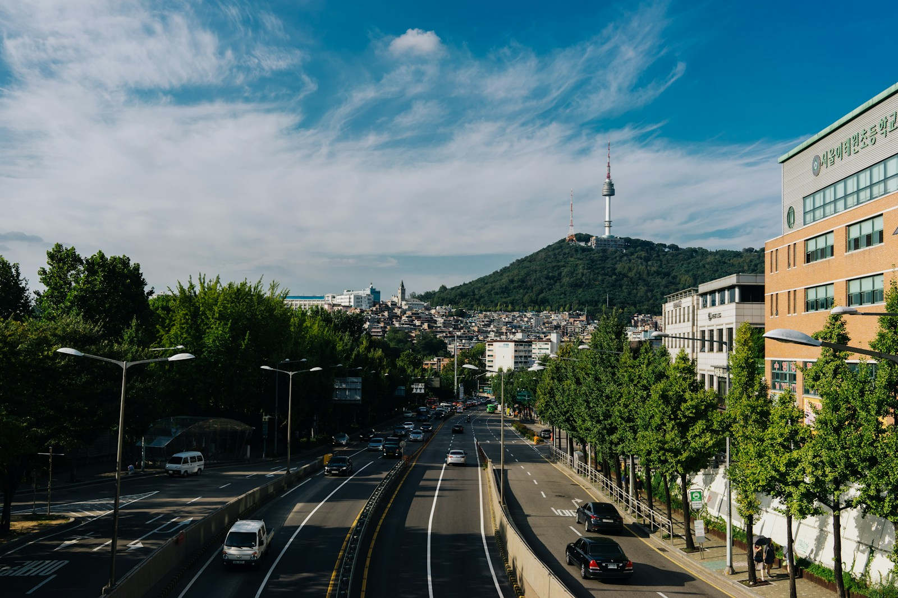

어제보다 더 큰 나, 내일을 바꾸는 우리
청소년의 가능성을 키우고,
지역사회와 함께합니다
유스에이블코리아는 청소년·다문화·시민교육 프로그램과 정책연구를 통해 청소년의 성장과 사회 참여를 지원하는 비영리 사단법인입니다.
{% assign op = site.categories.recruit | where: "status", "open" %}{% if op.size > 0 %}프로그램·행사 보기모집 중 {{ op.size }}{% else %}주요 사업 보기{% endif %}협력 문의
모집·행사
지금 신청할 수 있어요
{% assign op = site.categories.recruit | where: "status", "open" %}{% if op.size > 0 %}{% for p in op limit: 3 %}{% include rcard.html p=p %}{% endfor %}{% else %}
지금 모집 중인 프로그램이 없습니다. 모집이 확정되면 이곳에 안내합니다.
{% endif %}

VISION
청소년이 사랑으로 배우고, 나눔으로 성장하며, 참여로 세상을 바꿉니다.
AAgape · 사랑
한 사람의 존엄과 공동선을 향한 사랑으로 행동합니다.
BBlessing · 나눔
저마다 가진 재능과 역량을 사회적 가치로 나눕니다.
LLeadership · 리더십
세상에 선한 영향을 미치는 글로벌 리더로 성장합니다.
EEngagement · 참여
사회문제에 능동적으로 참여하고, 해결에 앞장섭니다.
네 가지 가치의 머리글자가 모여 법인 이름 ABLE이 됩니다.
걸어온 길
청소년이 스스로 길을 찾도록,
지역의 어른들이 함께 걸었습니다
유스에이블코리아의 전신인 청소년단체 ‘채움늘’은 서울시교육청 교육후견인제 사업을 2년 동안 수행했습니다. 초등학생, 중학생, 학교 밖 청소년이 교육후견인과 정기적으로 만나 자신의 속도로 배움을 이어 갔습니다.
연혁 보기12명
함께한 청소년
143회
교육후견인 대면 만남
9곳
연계 학교
2년
2023~2024 사업 수행
출처: 전신 단체 채움늘 실적(2023~2024, 서울시교육청 교육후견인제)
소식·자료
유스에이블코리아 소식
공지사항
- {% unless site.categories.notice %}
- 등록된 공지가 없습니다. {% endunless %}{% for p in site.categories.notice limit: 3 %}
- {% if p.pinned %}고정{% endif %}{{ p.title }}{{ p.date | date: "%Y. %-m. %-d." }} {% endfor %}
활동 이야기
- {% unless site.categories.story %}
- 등록된 활동 이야기가 없습니다. {% endunless %}{% for p in site.categories.story limit: 3 %}
- 활동 이야기{{ p.title }}{{ p.date | date: "%Y. %-m. %-d." }} {% endfor %}
함께하는 방법
회원 가입, 전문가 협력, 후원으로 유스에이블코리아의 공익활동에 함께하실 수 있습니다.
오시는 길
서울 마포구 서교동
- 주소
- 서울특별시 마포구 양화로 64, 서교제일빌딩 1102호
- 전화
- 02-332-5239
- 이메일
- eunhaelee@youthablekorea.org

네이버 지도에서 위치 보기